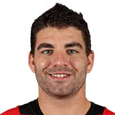
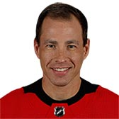

HURRICANES
| Photo |
Name |
Number |
Position |
Shot |
Height |
Weight |
Birthday |
Hometown |
|
Sebastian Aho |
20 |
RW |
L |
5' 11" |
172 |
Jul 26, 1997 |
Rauma, FIN |
|
Clark Bishop |
64 |
C |
L |
6' 1" |
199 |
Mar 29, 1996 |
St. John's, NL, CAN |
|
Micheal Ferland |
79 |
LW |
L |
6' 2" |
208 |
Apr 20, 1992 |
Swan River, MB, CAN |
|
Warren Foegele |
13 |
LW |
L |
6' 2" |
190 |
Apr 1, 1996 |
Markham, ON, CAN |
|
Saku Maenalanen |
8 |
RW |
L |
6' 4" |
207 |
May 29, 1994 |
Kemi, FIN |
|  |
Jordan Martinook |
48 |
LW |
L |
6' 0" |
204 |
Jul 25, 1992 |
Brandon, MB, CAN |
|
Brock McGinn |
23 |
LW |
L |
6' 0" |
185 |
Feb 2, 1994 |
Fergus, ON, CAN |
|
Greg McKegg |
42 |
C |
L |
6' 0" |
194 |
Jun 17, 1992 |
St. Thomas, ON, CAN |
|
Victor Rask |
49 |
C |
L |
6' 2" |
200 |
Mar 1, 1993 |
Leksand, SWE |
|
Jordan Staal |
11 |
C |
L |
6' 4" |
220 |
Sep 10, 1988 |
Thunder Bay, ON, CAN |
|
Andrei Svechnikov |
37 |
RW |
L |
6' 2" |
188 |
Mar 26, 2000 |
Barnual, RUS |
|
Teuvo Teravainen |
86 |
LW |
L |
5' 11" |
178 |
Sep 11, 1994 |
Helsinki, FIN |
|
Lucas Wallmark |
71 |
C |
L |
6' 0" |
176 |
Sep 5, 1995 |
Umea, SWE |
|
Justin Williams |
14 |
RW |
R |
6' 1" |
188 |
Oct 4, 1981 |
Cobourg, ON, CAN |
| Photo |
Name |
Number |
Shot |
Height |
Weight |
Birthday |
Hometown |
|
Calvin de Haan |
44 |
L |
6' 1" |
198 |
May 9, 1991 |
Carp, ON, CAN |
|
Justin Faulk |
27 |
R |
6' 0" |
215 |
Mar 20, 1992 |
South St.Paul, MN, USA |
|
Dougie Hamilton |
19 |
R |
6' 6" |
210 |
Jun 17, 1993 |
Toronto, ON, CAN |
|
Brett Pesce |
22 |
R |
6' 3" |
200 |
Nov 15, 1994 |
Tarrytown, NY, USA |
|
Jaccob Slavin |
74 |
L |
6' 3" |
205 |
May 1, 1994 |
Denver, CO, USA |
|
Trevor van Riemsdyk |
57 |
R |
6' 2" |
188 |
Jul 24, 1991 |
Middletown, NJ, USA |
| Photo |
Name |
Number |
Height |
Weight |
Birthday |
Hometown |
|  |
Curtis McElhinney |
35 |
6' 2" |
203 |
May 23, 1983 |
London, ON, CAN |
|
Petr Mrazek |
34 |
6' 2" |
181 |
Feb 14, 1992 |
Ostrava, CZE |